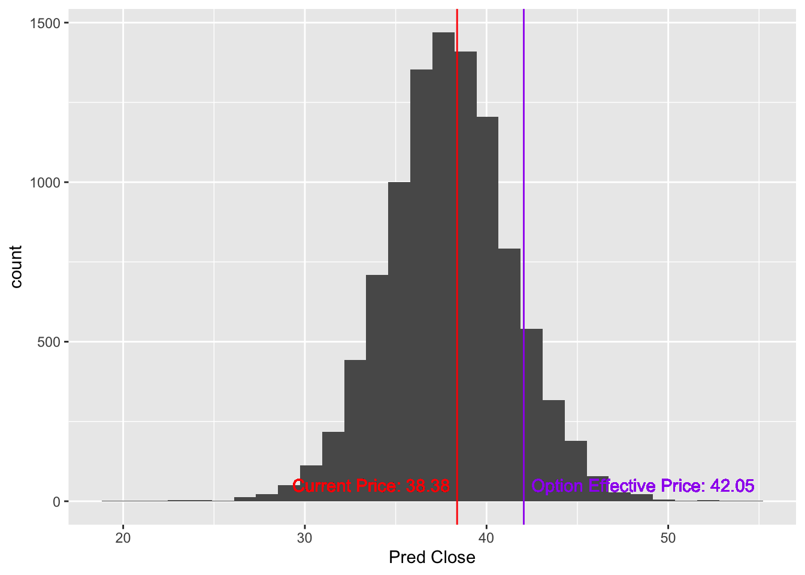

3 The Monte Carlo Engine
3.1 A Quick Reminder on what the Monte Carlo Simulation Does
There’s a few things to note in a Monte Carlo simulation. In this case, we are talking about daily changes in a stock price. More specifically for this example, we are talking about daily price changes in Comcast stock (CMCSA).
The Monte Carlo simulation is randomly picking (loosely from history - but that is beyond the depth of understanding needed here) what the percentage change in stock price will be for each day until the strike price. It is then repeating that simulation of what the stock price will do over and over. The beauty of this is that we get, hypothetically, a view of all possible outcomes for the stock up to the option’s maturity.
3.2 Effective Price and Being In-The-Money
To find the probability that a certain option is in-the-money, we can simply count the number of simulations that finish above (below) the effective price (the strike plus the premium for the option) and divide by the total simulations - this is the beauty of the monte carlo simulations.
3.2.1 Why do we care about the effective price (instead of just Strike Price)?
It is not enough to find out if an option will only go above its strike price. You have to pay to own the option… hence, you are already some money into the deal. Since you’ve already paid some money, you need to make that money back, too, to be in-the-money.
When the strike is in-the-money, the premium to buy the option will be large enough to make the effective price equal to the current price. The more in-the- money, the higher the premium.
When the strike is out-of-the-money, the premium will be smaller. The further out-of-the-money a strike is, the lower the premium.
3.2.2 Let’s look at an example.
CMCSA is currently trading at $38.23. Let’s use a call option with a strike of $42 that has a premium of $0.05. The effective price of the option is \(\$42 + \$0.05 = \$42.05\).
What is the probability that we meet or exceed that effective price on the strike date? To find that out, we count all of the simulations that ended with a price greater than or equal to the effective price and divide that by the total count of simulations.
In this case, we have 1,082 simulations that are in-the-money out of a total 10,000, or 10.82% chance that this option ends in the money.
## `stat_bin()` using `bins = 30`. Pick better value with `binwidth`.
- Show histogram and box plot
- Show expected value in the money